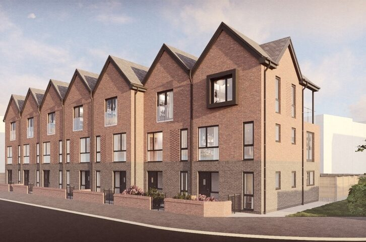
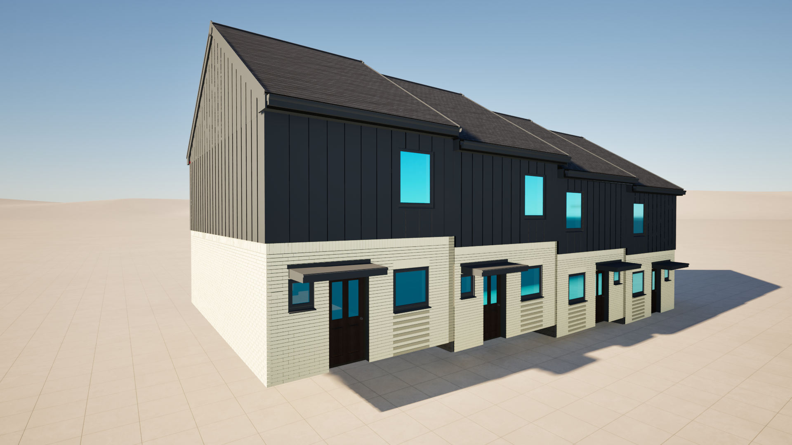
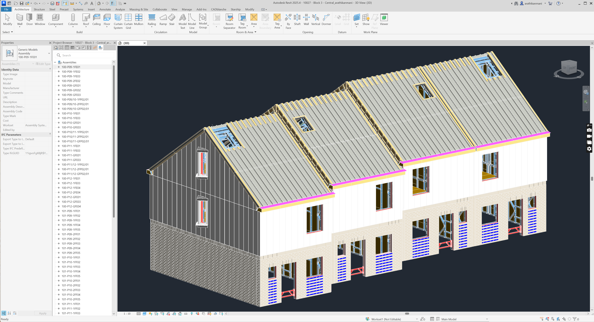
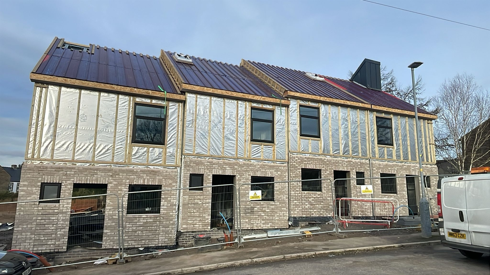
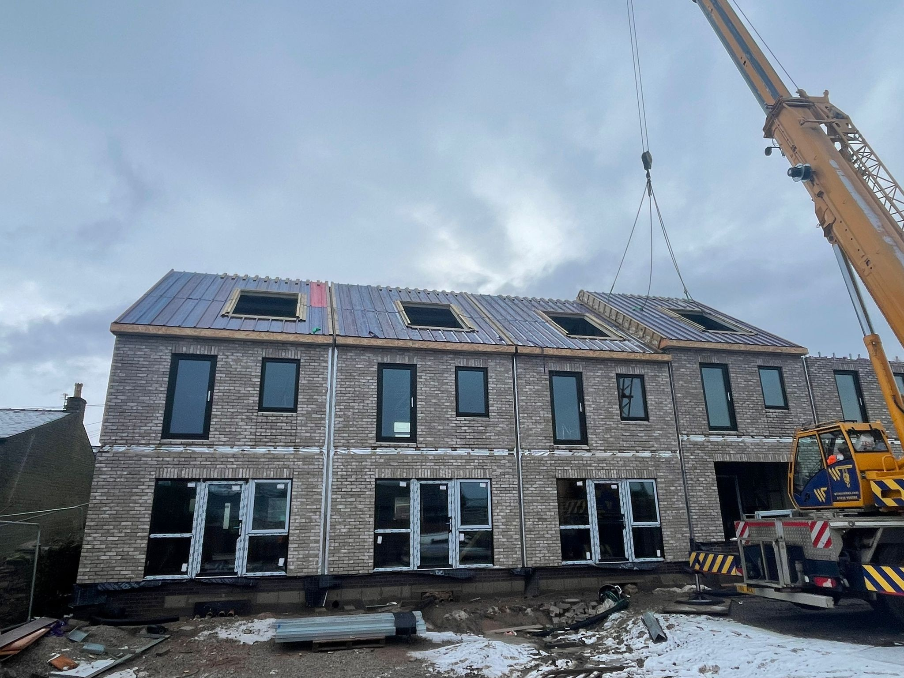
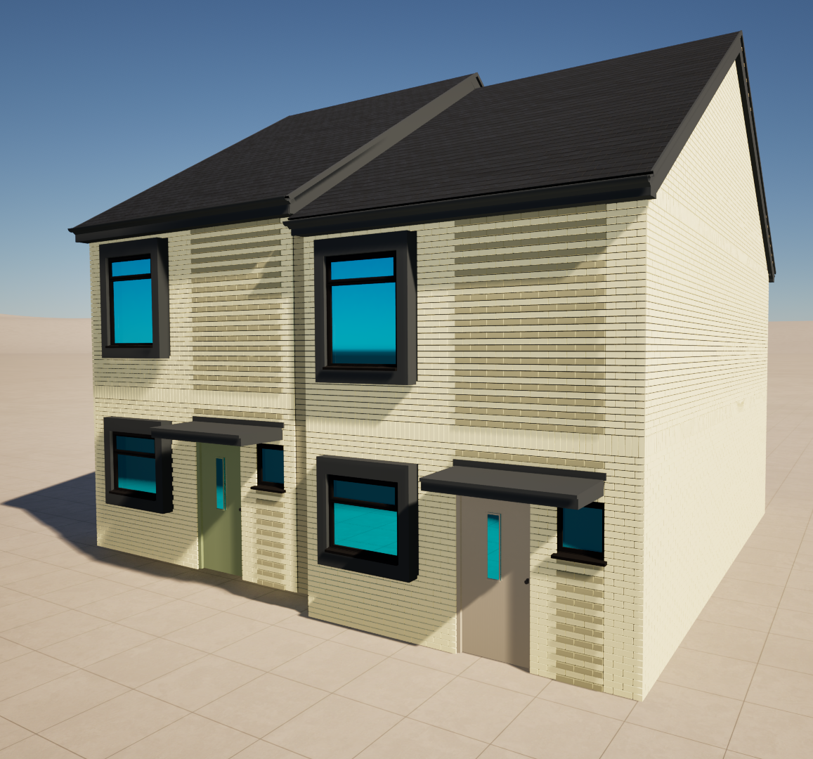
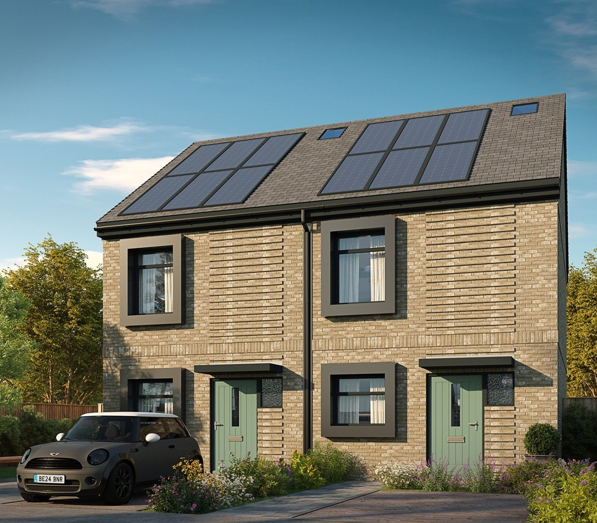

Technical detailing
Developing and refining architectural details for bespoke building elements, junctions and interfaces.
TECHNICAL DESIGN01 / PROFESSIONAL WORK · RESIDENTIAL
Residential Development · 13 Zero-Carbon Homes
Technical design and BIM coordination for a residential development featuring an innovative brick-slip façade, bespoke architectural interfaces and coordinated information for manufacture and installation.

02 / PROJECT OVERVIEW
Atherton Grove is a residential development comprising 13 zero-carbon homes, currently progressing through installation. The project incorporates a brick façade system using Vandersanden brick slips, requiring coordination between the architectural design, supporting structure and external envelope.
Bespoke elements include chimney assemblies, projecting windows and an external cladding system developed as a volumetric pod rather than a conventional two-dimensional panelised build-up. These components introduce specific requirements for interface coordination, buildability and installation sequencing.
My contribution focuses on producing and refining architectural technical details, coordinating structural interfaces, waterproofing strategies, façade build-ups and installation requirements. The information is developed to support Design for Manufacture and Assembly (DfMA), construction accuracy and practical delivery.
Revit is used to support architectural modelling, technical detailing and design coordination. Reviewing model interfaces helps identify potential clashes and resolve design issues before manufacture and installation, reducing the risk of avoidable on-site rework.
03 / MY CONTRIBUTION
DESIGN → DELIVERY
Developing and refining architectural details for bespoke building elements, junctions and interfaces.
TECHNICAL DESIGNCoordinating structural, waterproofing and façade requirements across interconnected components.
DESIGN COORDINATIONUsing BIM models to review design interfaces, examine build-ups and identify potential conflicts.
BIM WORKFLOWSupporting coordinated technical information for manufacture, assembly and on-site installation.
CONSTRUCTION DELIVERY04 / SELECTED IMAGERY
A selection of project imagery illustrating design development, BIM workflows and the relationship between technical design and construction.






Selected imagery presented for portfolio purposes. Confidential drawings and project information are excluded.
CONTINUE EXPLORING